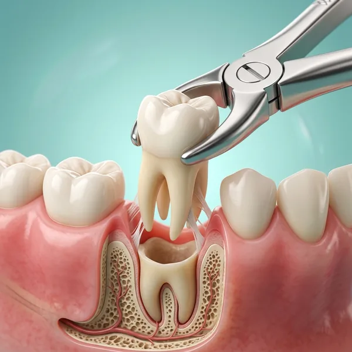

Tooth Extraction in Gudivada
Safe, gentle tooth removal when needed. Expert surgical care, minimal discomfort, speedy healing — all at Krishna Dental.

When is extraction necessary?
While we always try to save your natural tooth, sometimes extraction is the best option for your long-term oral health. Here are the most common reasons why tooth extraction becomes necessary:
Severely damaged or decayed teeth — When decay reaches deep into the tooth and root canal treatment isn't viable, extraction prevents infection from spreading.
Advanced periodontal disease — When gum disease has destroyed the bone supporting the tooth, it can no longer be saved and must be removed.
Overcrowding — Extracting teeth creates space for orthodontic alignment and a better bite.
Impacted wisdom teeth — Third molars that are trapped or growing at an angle must be surgically removed to prevent pain and damage to adjacent teeth.
Types of extraction
Simple extraction
For teeth that are visible and easily accessible. The tooth is loosened and removed gently. Quick and straightforward with minimal trauma.
Surgical extraction
For impacted teeth or teeth that can't be accessed directly. We may remove bone or split the tooth into sections for safe removal.
Wisdom tooth removal
Third molars are often impacted or partially erupted. Our surgeons remove them with precision to prevent pain and future complications.
Multiple extractions
Sometimes several teeth need removal for orthodontics or due to severe decay. We plan carefully to minimise healing time and maintain oral health.
The extraction procedure
Evaluation & X-rays
We examine the tooth and take digital X-rays to see the roots, bone structure, and any complications. This helps us plan the safest extraction approach.
Anaesthesia
Local anaesthesia is administered to numb the tooth and surrounding area. You'll feel pressure and vibration, but no pain. We make sure you're completely comfortable.
Extraction
The tooth is carefully loosened using specialised instruments, then gently removed. For complex cases, we may remove bone or divide the tooth into sections.
Socket care
The extraction site is cleaned and may be closed with sutures if needed. A gauze pad is placed to help form a blood clot, which is essential for proper healing.
Recovery & healing
You'll receive detailed aftercare instructions to manage swelling, prevent infection, and promote faster healing. Most people feel normal within a few days.
Your comfort is our priority
Gentle surgical technique
Minimal trauma, precise instruments, and careful handling of tissues. Our surgeons prioritise speed and gentleness to reduce post-operative swelling.
Modern anaesthesia
Latest anaesthetic agents ensure you stay completely numb and relaxed. We also use techniques to make injections as painless as possible.
Clear aftercare instructions
We provide detailed written and verbal instructions on how to care for the extraction site, manage pain, and prevent complications like dry socket.
Follow-up care
We schedule a post-operative check-up to ensure proper healing and address any questions or concerns you may have during recovery.
Caring for the extraction site
Bite gently on the gauze pad for 30–45 minutes to let a blood clot form — this clot is essential for healing, so avoid rinsing forcefully, using a straw, or spitting hard for the first 24 hours, as this can dislodge it and cause a painful dry socket. Ice packs on the cheek for the first day help control swelling.
Stick to soft, cool foods (yogurt, soup, mashed potatoes) for the first day or two, and gradually return to normal eating as comfort allows. Some swelling and mild discomfort for 2–3 days is expected; call us if you notice heavy bleeding, worsening pain after day three, or fever, as these need to be checked.
Smoking significantly raises the risk of dry socket and should be avoided for at least 48–72 hours, and it's best to skip vigorous exercise for the first day so blood pressure doesn't dislodge the healing clot.
What happens after extraction
Once a tooth is removed, the surrounding teeth can gradually shift into the gap over time, and the jawbone beneath it slowly loses density without a tooth root to stimulate it. This is why replacing an extracted tooth — with an implant, bridge, or denture — is usually worth planning for.
We'll discuss replacement options at your extraction visit, or you're welcome to take time to decide once healing is complete. For extractions due to overcrowding (as with some wisdom teeth), replacement isn't usually necessary — we'll advise based on which tooth was removed and why.
If an implant is the eventual plan, placing it within a few months of extraction — before the jawbone has had time to shrink back — is usually easier and can avoid the need for a bone graft later.
We understand extraction can feel like a last resort, and we only recommend it when the alternative genuinely isn't in your best interest — a tooth that's fractured below the gumline, too severely decayed to restore, badly impacted, or contributing to overcrowding that orthodontic treatment needs resolved. Before recommending extraction, we always check whether the tooth can realistically be saved with a root canal or a crown instead, since preserving a natural tooth is nearly always the better long-term outcome when it's a viable option. When extraction genuinely is the right call, our focus shifts to making the procedure as comfortable as possible and helping you plan the next step, whether that's a replacement or simply healing.